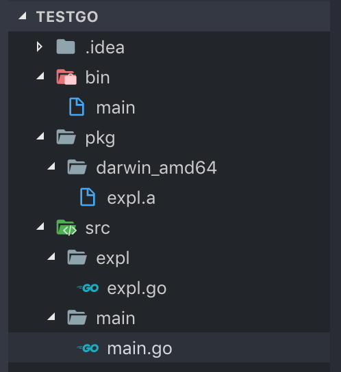

一 常用Go命令
1.1 常用命令汇总
go version： 获取Go版本go help： 查看Go帮助命令go get： 获取远程包（需提前安装git或hg）go build： 编译并生成可执行程序go run： 直接运行程序go fmt： 格式化源码go install： 编译包文件以及整个程序go test： go原生提供的单元测试命令go clean： 移除当前源码包和关联源码包里编译生成的文件go tool： 升级Go版本时，修复旧版代码godoc -http:80：开启一个本地80端口的web文档gdb 可执行程序名：调试Go编译出来的文件
1.2 go fmt
go fmt命令可以格式化代码文件：
# 命令格式：使用go fmt命令，其实是调用了gofmt，而且需要参数-w，否则格式化结果不会写入文件
go fmt -w 文件名.go
# 示例：格式化整个项目
gofmt -w -l src
常见参数：
-l： 显示那些需要格式化的文件-w： 把改写后的内容直接写入到文件中，而不是作为结果打印到标准输出。-r： 添加形如"a[b:len(a)] -> a[b:]"的重写规则，方便我们做批量替换-s： 简化文件中的代码-d： 显示格式化前后的diff而不是写入文件，默认是false-e： 打印语法错误到标准输出。无此参数只会打印不同行的前10个错误。
1.3 go install
go install命令用来生成项目的可执行文件。进入对应的go文件所在的目录执行命令可以直接生成一个可执行文件在bin目录，如图：

贴士：
- 添加参数
-v，可以查看该命令底层执行信息 - 如果
main.go中引入并使用了expl包，则该包的内容也被会安装进bin目录中 - go文件中如果没有
main函数无法执行，这样的文件称之为应用包，会被编译为.a文件，并生成在pkg文件夹中
注意：
没有开启go mod时，使用上述命令需要配置GOPATH，否则会报：no install location。
1.4 go tool
go tool下聚集了很多命令，主要有2个，即fix和vet：
go tool fix .：用来修复以前老版本的代码到新版本go tool vet directory|files：分析当前目录的代码是否正确
1.5 go get
go get用来获取远程仓库中的包，使用该命令前必须配置GOPATH,而且依据不同的源码网站，还要安装不同的版本管理工具，比如从github上使用go get需要额外安装git。
示例：
# 下载包：添加 -u 参数可以自动更新包和依赖
go get github.com/**/**
# 使用包：与普通包使用方式一致
import "github.com/****/****"
go get本质上可以理解为通过源码工具clone下代码后，执行了go install。
由于一些原因，有的包无法下载，如包"golang.org/x/sync/syncmap"，可以在src目录下执行下面的操作：
mkdir -p golang.org/x/
cd golang.org/x/
git clone https://github.com/golang/sync.git
1.6 go build
go build用于编译代码，在编译过程中，会同时编译与之相关联的包。
- 如果是main包，执行
go build之后，会在当前目录下生成一个可执行文件。如果你需要在$GOPATH/bin下生成相应的文件，需要执行go install，或者使用go build -o 路径/a.exe - 如果是普通包，执行go build之后，它不会产生任何文件
- 该命令默认会编译当前目录下的所有go文件，如果只想编译某个文件，可使用
go build exp.go go build会忽略目录下以_或.开头的go文件
如果go build报错：
/usr/lib/go-1.10/pkg/tool/linux_amd64/link: running gcc failed: exit status 1
/tmp/go-link-008006128/000026.o: In function _cgo_05dc84caff82_Cfunc_sysconf': /tmp/go-build/cgo-gcc-prolog:32: multiple definition of_cgo_05dc84caff82_Cfunc_sysconf’
/tmp/go-link-008006128/000024.o:/tmp/go-build/cgo-gcc-prolog:32: first defined here
collect2: error: ld returned 1 exit status
则解决方案是：
linux: export CGO_ENABLED=0
windows : cmd: set CGO_ENABLED=0
windows ： powershell:$env:CGO_ENABLED=0